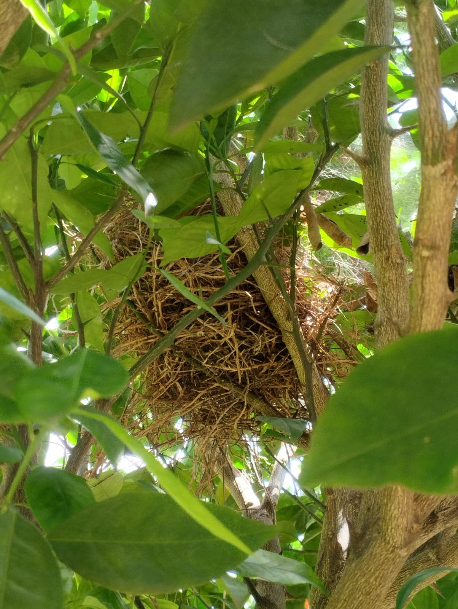

somos a
Diretoria de Saúde e Meio Ambiente
D.S.M.A.
Nós temos como propósito promover a conscientização, o cuidado e o engajamento dos estudantes em temas fundamentais como saúde física, mental e preservação ambiental.
Por meio de projetos, campanhas educativas e ações práticas, buscamos criar um ambiente escolar mais saudável, sustentável e acolhedor, incentivando hábitos de vida equilibrados, o respeito ao meio ambiente e a participação ativa dos estudantes na construção de uma escola mais consciente e responsável.
A D.S.M.A. acredita que pequenas atitudes geram grandes mudanças — e que a transformação começa dentro do próprio ambiente escolar.
Destaques e notícias
Ninho de pássaro encontrado no campus
A natureza é linda
